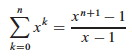

Outline
- Amortized Analysis: The General Idea
- Multipop Example
- Aggregate Analysis
- Accounting Method
- Potential Method
- Dynamic Table Example (first look)
- Other Examples
Amortized Analysis: The General Idea
We have already used aggregate analysis several times in this course. For example, when analyzing the BFS and DFS procedures, instead of trying to figure out how many times their inner loops
for each _v_ ∈ G.Adj[_u_]
execute (which depends on the degree of the vertex being processed), we realized that no matter how the edges are distributed, there are at most |E| edges, so in aggregate across all calls the loops will execute |E| times.
But that analysis concerned itself only with the complexity of a single operation. In practice a given data structure will have associated with it several operations, and they may be applied many times with varying frequency.
Sometimes a given operation is designed to pay a larger cost than would otherwise be necessary to enable other operations to be lower cost.
Example: Red-black tree insertion. We pay a greater cost for balancing so that future searches will remain O(lg n).
Another example: Java Hashtable.
- These grow dynamically when a specified load factor is exceeded.
- Copying into a new table is expensive, but copying is infrequent and table growth makes access operations faster.
It is "fairer" to average the cost of the more expensive operations across the entire mix of operations, as all operations benefit from this cost.
Here, "average" means average cost in the worst case (thankfully, no probability is involved, which greatly simplifies the analysis).
We will look at three methods. The notes below use Stacks with Multipop to illustrate the methods. See the text for binary counter examples.
(We have already seen examples of aggregate analysis throughout the semseter. We will see examples of amortized analysis later in the semester.)
Multipop Example
We already have the stack operations:
Push(_S, x_): O(1) each call, so O(n) for any sequence of n operations.Pop(_S_): O(1) each call, so O(n) for any sequence of n operations.
Suppose we add a Multipop (this is a generalization of ClearStack, which
empties the stack):


The example shows a Multipop(S,4) followed by another where k ≥ 2.
Running time of Multipop:
- Linear in number of
Popoperations (one per loop iteration) - Number of iterations of
whileloop is min(s, k), where s = number of items on the stack - Therefore, total cost = min(s, k).
What is the worst case of a sequence of n Push, Pop and Multipop
operations?
Using our existing methods of analysis we can identify a loose bound::
- The most expensive operation is
Multipop, potentially O(n). - Therefore, potentially O(n2) over n operations.
Aggregate Analysis
We can tighten this loose bound by aggregating the analysis over all n operations:
- Each object can only be popped once per time that it is pushed.
- There are at most n
Pushes, so at most nPops, including those inMultipop - Therefore, total cost = O(n)
- Averaging over the n operations we get O(1) per operation.
This analysis shows O(1) per operation on average in a sequence of n operations without using any probabilities of operations.
See text for example of aggregate analysis of binary counting. An example of aggregate analysis of dynamic tables is at the end of these notes.
Some of our previous analyses with indicator random variables have been a form of aggregate analysis, e.g., our analysis of the expected number of inversions in sorting, Topic 5 Notes.
Aggregate analysis treats all operations equally. The next two methods let us give different operations different costs, so are more flexible.
Accounting Method
Metaphor:
- View the computer as a coin operated appliance that requires one cyber-dollar (CY$) per basic operation.
- The banks are wary of making loans these days, so when an operation is to be performed we must have enough cyber-dollars available to pay for it.
- We are permitted to charge some operations more than they actually cost so we can save enough to pay for the more expensive operations.
Amortized cost = amount we charge each operation.
This differs from aggregate analysis:
- In aggregate analysis, all operations have the same cost.
- In the accounting method, different operations can have different costs.
When an operation is overcharged (amortized cost > actual cost), the difference is associated with specific objects in the data structure as credit.
We use this credit to pay for operations whose actual cost > amortized cost.
The credit must never be negative. Otherwise the amortized cost may not be an upper bound on actual cost for some sequences.
Let
- ci = actual cost of ith operation.
- ĉi = amortized cost of ith operation (notice the 'hat').
Require ∑i=1,nĉi ≥ ∑i=1,nci for all sequences of n operations. That is, the difference between these sums always ≥ 0: we never owe anyone anything.
Stack Example
Whenever we Push an object (at actual cost of 1 cyberdollar), we potentially
have to pay CY$1 in the future to Pop it, whether directly or in Multipop.
To make sure we have enough money to pay for the Pops, we charge Push
CY$2.
- CY$1 pays for the push
- CY$1 is prepayment for the object being popped (metaphorically, this CY$1 is stored "on" the object).
Since each object has CY$1 credit, the credit can never go negative.
The total amortized cost ĉ = ∑i=1,nĉi for any sequence of n operations is an upper bound on the total actual cost c = ∑i=1,nci for that sequence.
Since ĉ = O(n), also c = O(n).
Note: we don't actually store cyberdollars in any data structures. This is just a metaphor to enable us to compute an amortized upper bound on costs.
Potential Method
Instead of credit associated with objects in the data structure, this method uses the metaphor of potential associated with the entire data structure.
(I like to think of this as potential energy, but the text continues to use the monetary metaphor.)
This is the most flexible of the amortized analysis methods, as it does not require maintaining an object-to-credit correspondence.
Let
- D0 = initial data structure
- Di = data structure after ith operation
- ci = actual cost of ith operation.
- ĉi = amortized cost of ith operation.
Potential Function Φ: Di -> ℜ, and we say that Φ(Di) is the potential associated with data structure Di.
We define the amortized cost ĉi to be the actual cost ci plus the change in potential due to the ith operation:
ĉi = ci + Φ(Di) − Φ(Di-1)
- If at the ith operation, Φ(Di) − Φ(Di-1) is positive, then the amortized cost c'i is an overcharge and the potential of the data structure increases.
- On the other hand, if Φ(Di) &minus: Φ(Di-1) is negative then c'i is an undercharge, and the decrease of the potential of the data structure pays for the difference (as long as it does not go negative).
The total amortized cost across n operations is:
∑i=1,nĉi = ∑i=1,n(ci + Φ(Di) - Φ(Di-1)) = (∑i=1,nci) + (Φ(Dn) - Φ(D0))
(The last step is taken because the middle expression involves a telescoping sum: every term other than Dn and D0 is added once and subtracted once.)
If we require that Φ(Di) ≥ Φ(D0) for all i then the amortized cost will always be an upper bound on the actual cost no matter which ith step we are on.
This is usually accomplished by defining Φ(D0) = 0 and then showing that Φ(Di) ≥ 0 for all i. (Note that this is a constraint on Φ, not on ĉ. ĉ can go negative as long as Φ(Di) never does.)
Stack Example
Define Φ(Di) = number of objects in the stack.
Then Φ(D0) = 0 and Φ(Di) ≥ 0 for all i, since there are never less than 0 objects on the stack.
Charge as follows (recalling that ĉi = ci + Φ(Di) - Φ(Di-1)):
Since we charge 2 for each Push and there are O(n) Pushes in the worst case,
the amortized cost of a sequence of n operations is O(n).
Does it seem strange that we charge Pop and Multipop 0 when we know they
cost something?
- Remember that this is just a way of counting the total cost over a sequence of operations more precisely.
- It is not a claim about the actual cost of a specific procedural call.
- Like with the accounting method, we are guaranteeing that we have just enough credit on hand to pay for the operations when they happen.
- The methods give a tight bound on amortized cost, but with much easier counting than if we had to reason about probability distributions, etc.
Application: Dynamic Tables
There is often a tradeoff between time and space, for example, with hash tables. Bigger tables give faster access but take more space.
Dynamic tables, like the Java Hashtable, grow dynamically as needed to keep the load factor reasonable.
Reallocation of a table and copying of all elements from the old to the new table is expensive!
But this cost is amortized over all the table access costs in a manner analogous to the stack example: We arrange matters such that table-filling operations build up sufficient credit before we pay the large cost of copying the table; so the latter cost is averaged over many operations.
A Familiar Definition
Load factor α = num/size, where num = # items stored and size = the allocated size of the table.
For the boundary condition of size = num = 0, we will define α = 1.
We never allow α > 1 (no chaining).
Insertion Algorithm
We'll assume the following about our tables. (See Exercises 17.4-1 and 17.4-3 concerning different assumptions.):
When the table becomes full, we double its size and reinsert all existing items. This guarantees that α ≥ 1/2, so we are not wasting a lot of space.
Table-Insert (T,x)
1 if T.size == 0
2 allocate T.table with 1 slot
3 T.size = 1
4 if T.num == T.size
5 allocate newTable with 2*T.size slots
6 insert all items in T.table into newTable
7 free T.table
8 T.table = newTable
9 T.size = 2*T.size
10 insert x into T.table
11 T.num = T.num + 1
Each elementary insertion has unit actual cost. Initially T.num = T.size= 0.
Aggregate Analysis of Dynamic Table Expansion
Charge 1 per elementary insertion. Count only elementary insertions, since all other costs are constant per call.
ci = actual cost of ith operation.

- If the table is not full, ci = 1 (for lines 1, 4, 10, 11).
- If full, there are i - 1 items in the table at the start of the ith operation. Must copy all of them (line 6), and then insert the ith item. Therefore ci = i - 1 + 1 = i.
A sloppy analysis: In a sequence of n operations where any operation can be O(n), the sequence of n operations is O(n2).
This is "correct", but inprecise: we rarely expand the table! A more precise account of ci:

Then we can sum the total cost of all ci for a sequence of n operations:

Explain: Why the n? What is the summation counting? Why does the summation start at j = 0? Why does it end at j = lg n?
Therefore, the amortized cost per operation = 3: we are only paying a small constant price for the expanding table.
The text also gives accounting and potential analyses of table expansion.
This analysis assumed that the table never shrinks. See section 17.4 (and your homework) for an analysis using the potential method that covers shrinking tables.
Other Examples
Here are some other algorithms for which amortized analysis is useful:
Red-Black Trees
An amortized analysis of Red-Black Tree restructuring (Problem 17-4 of CLRS) improves upon our analysis earlier in the semester:
- Any sequence of m
RB-InsertandRB-Deleteoperations performs O(m) structural modifications (rotations), - This each operation does O(1) structural modifications on average, regardless of the size of the tree!
- An operation still may need to do O(lg n) recolorings, but these are very simple operations.
Self-Organizing Lists
- Self-organizing lists use a move-to-front heuristic: Immediately after searching for an element, it is moved to the front of the list.
- This makes frequently accessed items more readily available near the front of the list.
- An amortized analysis (Problem 17-5) shows that the heuristic is no more than 4 times worse than optimal.
Splay Trees
- Splay trees are ordinary binary search trees (no colors, no height labels, etc.)
- After every access (every insertion, deletion, or search), the element operated on (or its parent in the case of deletion) is moved towards the top of the tree.
- This movement uses three splaying operations called "zig", "zig-zig" and "zig-zag".
- Although in the worst case a splay tree can degenerate into an O(n) linked list, amortized analysis shows that the expected case is O(lg n)
- Randomization can be used to make the worst case very unlikely.
- If a single element is accessed at least m/4 times where m is the number of operations, then the amortized running time of each of these accesses is O(1).
- Thus, splay-trees self-organize to provide fast access to frequently accessed items.
- This makes them good for locality of reference in memory, but multithreaded access must be implemented carefully.
To Be Continued
Amortized analysis will be used in analyses of
- Graph search (Topic 14, Ch. 22)
- Disjoint set operations (Topic 16, Ch. 21)
- Dijkstra's Algorithm for Shortest Paths (Topic 18, Ch. 24)
Dan Suthers Last modified: Sun Mar 16 02:03:09 HST 2014
Images are from the instructor's material for Cormen et al. Introduction to
Algorithms, Third Edition.